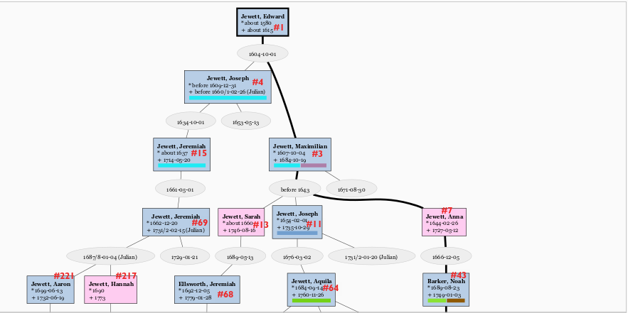
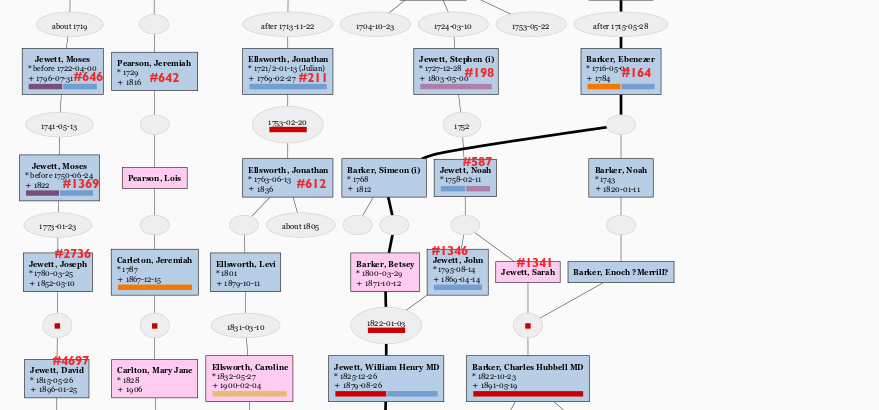
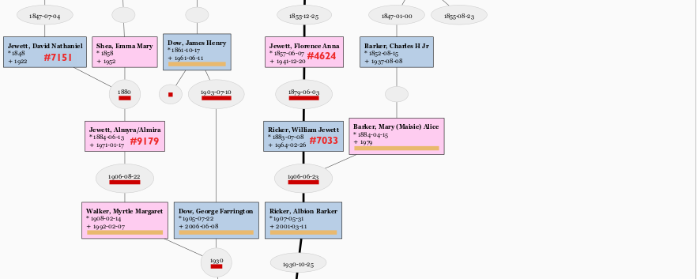

This page reports additional Descendants (non-living only) of Jewetts of America (OpenLibrary) volumes 1 & 2 persons in my own ancestry. (Hereafter referred to as JoA and J#.)
As far as I know (AFAIK), none of the un-numbered persons listed here were in the Newsletters or Annuals. (If JoA society newsletter editor would like this reformatted for newsletter, contact me on FB or email!)
Siblings and/or parents of two last-numbered ancestors here are mentioned in Newsletter/Quarterly articles, but not the last-numbered ancestor nor first un-numbered, as noted below at J#7151 & J#9180 + J#9181, J#217 & J#645, q.v.
I’ve made my own index of Vols 3 & 4 clusters, and i have verified none of those newly numbered clusters match these un-numbered lines. Though several are adjacent:
  
Key:
Note: Numbers below that are prefixed with J# are Jewetts of America numbers from those books, which are referred to as JoA. Other family descendency ids provided as cross-reference are identified when used.
(William H.^2692, John^1346, Noah^587, Stephen^198, Aquila^64, Joseph^11, Maximilian^3, Edward^1)
(b. 1857-06-07 - Double Branch, GA, d. 1941-12-20)
sp. Ricker, Albion (Allie) Swett (b. 1857-12-07 - Turner, ME, Androscoggin Co, Maine, USA, d. 1914-08-14 - Turner, ME, Androscoggin Co, Maine, USA),
Cross-reference Ricker#4892 (in Ricker Gen.).
Note J#1346 John Jewett’s wife Betsey Barker is his fourth cousin, of Jewett descent: Betsey^5 Barker, Simeon^4, Ebenezer^3, Noah^2, Barzilla^1 Barker m. J#7 Anna (Hannah) Jewett (Barker), dau. of J#3 Maximilian, so that their children have doubled Jewett.
3 children:
(b. 1880-11-21, d. 1906-08-04)
sp. Mitchell, Arthur Albert (b. 1880, d. 1914), m. 1902-12-17
JoA listed as ONE child, no J#; actually two sons.
Mitchell, Alfred Ricker (b. 1905-01-09, d. 1961)
sp. Ayles, Marion E (Morris) (d. 1991), m. 1925-05-09
Mitchell, Donald Bates (b. 1906-08-02, d. 1988)
sp. Bailey, Grace L (Forster) (b. 1909, d. 2000) obit;
no issue from this marriage.
(Her (m.2); she (m.1) Francis Lee Bailey sr. - 3 sons, including noted attorney F Lee Bailey (jr) (1933-06-10 - 2021-06-03; obit, news); AFAIK other children may yet live so not included.)
(b. 1883-07-08 - Turner, ME, Androscoggin Co, Maine, USA, d. 1964-02-26 - Turner, ME, Androscoggin Co, Maine, USA) (F-a-G)
sp. Barker, Mary (Maisie) Alice (b. 1884-04-15, d. 1979), (F-a-G)
Mary is also desc of J#587 Deacon Noah Jewett, via J#1341 Sarah/Sally Jewett (Barker), who had married Enoch (Enoch Merrill?) Barker, her fourth cousin via J#7 Anna Jewett (Barker), so Mary and Will were 3d Cousins by Jewett, 4th by Barker from J#64 Ebenzer Barker, etc.
Cross-reference - Ricker#9675
2 children:
(b. 1907-05-31 - Ricker Hill, Turner, ME, Androscoggin Co, Maine, USA, d. 2001-03-11 - Lewiston, Androscoggin, ME, Androscoggin Co, Maine, USA) (F-a-G)
sp. Field, Mabel Klose (b. 1908-02-25 - Sheffield MA, Berkshire Co MA, Massachusetts, USA, d. 1998-10-03), (F-a-G); middle name sometimes spelt ‘Close’ but VR says Klose;
Cross-reference - Ricker#15716.
3 children:
spouse living; living descent (including this reporter).
Cross-reference - Ricker#29711.
(b. 1908-09-15, d. 1990-11-24 - Auburn, Androscoggin Co, Maine, USA)
sp. Boothby, Laurence Bizzell (b. 1908-11-04, d. 1998-06-06 - Auburn, Androscoggin Co, Maine, USA),
multiple children, of whom most are living; two alas updatable:
ex-sp living?; living descent.
sp. living;
two of his sons pre-deceased him: Timothy E (b. 1961, d. 1984) (F-a-G) & Andy (b. 1963, d. 2018) (F-a-G), obit.
other descent living.
(b. 1887-07-07, d. 1927-10-06) (F-a-G)
sp. Hatch, Emery Bunker Newton (b. 1889-06-28, d. 1983-09-14 - Rockport ME) (F-a-G),
he (m.2) Katherine Devlin (F-a-G)
4 children:
nm; no issue.
sp. Pulliam, Richard E. (d. 2009), m. 1938-04-25;
no issue.
sp. Bowman, Ben Cook (b. 1912-12-22, d. 2001-02-01);
no issue.
sp. Moore, Robert Hugh (b. 1919-02-04, d. 2005-11-11)
multiple living descent.
(Deac. Noah^587, Stephen^198, Aquila^64, Joseph^11, Maximilian^3, Edward^1)
sister of John #1346 mentioned above
sp. Barker, Enoch ?Merrill?, her cousin descended of J#7 Anna (Hannah) Jewett (Barker) (line: Enoch M^5, Noah^4, Ebenezer^3, Noah^2, Barzilla^1 Barker m. Anna^7 Jewett)
Updates for one child, IDK if there are others:
(b. 1822-10-23 - Cornish, York, ME, d. 1891-05-19 - Wayne, ME, Kennebec Co, ME) (F-a-G), obit,
sp. (m.1) Small, Mary A(nn) (b. 1820-09-18 - Limington, York Co, ME, d. 1854-09-01 - Wayne, Kennebec Co, ME), (F-a-G)
sp. (m.2) Small, Abbie C (b. 1825-12-12 - Limington, York Co, ME, d. 1879-08-04) (F-a-G),
5 children (Bowdoin Col. obit seemingly under-counted!, “leaving” probably meaning surviving children, for which 1 each is correct.):
(b. 1852-08-15, d. 1937-08-08) (F-a-G)
Dentist
sp. Burgess, R Louise (b. 1854-11-24, d. 1909-09-15)
3 children:
married, no issue. Senior electrical engineer for growing power company.
nm; no issue; school teacher in Salem, MA.
last child of (m.1) Mary Ann, who died same day..
sp. Arris, Frank Harold (b. 1859-08-17, d. 1924-05-26)
1 child:
sp. Rawstron, Albert Victor (b. 1882-05-24, d. 1942-01-11)
(David^4697, Joseph^2736, Moses^1369, Moses^646, Aaron^#221, Jeremiah^69, Jeremiah^15, Joseph^4, Edward^1)
(b. 1848, d. 1922)
sp. Shea, Emma Mary (b. 1858, d. 1952),
_Emma Mary Shea (Jewett), wife of J#7151 David Jewett is supposedly also of Jewett Descent, from J#642 Jeremiah Pearson; supposed line given below, q.v.
This family is mentioned in JoA 1998 Quarterly article, issue no.2, “Jewett Families Buried at Whitefield Cemetery” , Barbara Jewett Shaw for the burial of parents and siblings of my ancestors; our gal is buried with her in-laws in Alna.
3 Children. I have as yet no additional information to offer on J#9180 2. Mabel and J#9181 3. Alvin Nathaniel lines.
(b. 1884-06-13 - Alna, Lincoln Co, ME, d. 1971-01-17 - Maine) (F-a-G) has errors reported.
sp. Walker, George Wilmot (b. 1884-05-04 - Alna, Lincoln Co, ME d. 1964-08-27 - Rockland, Knox Co, ME),
3 children:
(b. 1908-02-14 - Alna, Lincoln Co, ME, d. 1992-02-07, Maine) (F-a-G) has errors reported.
sp. Dow, George Farrington (b. 1905-07-22 - South Portland, Cumberland Co, ME, d. 2006-06-08 - Damariscotta, Lincoln Co, ME), (F-a-G) has errors reported.
George F Dow is of Jewett Descent via J#612 Jonathan Ellsworth below, q.v.
3 children:
(b. 1934-12-31 - Penobscot Co, ME, Maine, USA, d. 2021-01-01 - Raleigh, Wake Co., NC) obit, joint memorial service video
sp. Turner, James Harvey aka “Jim” (b. 1931-05-29 - Illinois, USA, d. 2020-07-09 Raleigh, Wake Co., NC), joint memorial service video
Living descent.
(b. 1937-09-10 - Old Town, Penobscot Co, ME, d. 2007-05-09 - Bangor, Penobscot Co, ME) obit
sp. Scott, Eddie (d. 1983-01-28)
Living descent.
(b. 1919-11-15 Maine, d. 1940-10-26 - Leyte, Philippines; WW2; USA 1LT CAC(AAA)) (F-a-G): marker in family plot (F-a-G): bu. Manilla
No issue.
(b. 1909-11-26 - Alna, Lincoln Co, ME, d. 1995-10-16)
sp. Childs, Nellie Burkett aka “Nell” (b. 1911-04-28 - Needham, Norfolk Co, MA, d. 1998-10-30 - Waldoboro, Lincoln Co, ME)
(b. 1942-10-13 - Damariscotta, Lincoln Co, ME; d. 2008-04-08 - Waterville, Kennebec Co, ME);
Living descent.
(Jeremiah^69, Jeremiah^15, Joseph^4, Edward^1)
sp. LT Stephen Pearson (jr);
Lt. Stephen and Hannah (Jewett) Pearson (J#217)are mentioned in Jewett Family America Quarterly, 1999 No.2 article correcting Vol. III, Cluster 645, [iii:154], regarding illegitimate and consanguineous parentage of J#10207 James Jewett, husband of their daughter J#638 Mary Pearson; citing The Maine Genealogist.
As noted above, there is a web genealogy with a Jewett line from this Jeremiah to the wife of J#7151 David Jewett above.
i have not verified this line found on the web myself, yet.
If this Pearson-Carelton line is correct, Emma M Shea and David N Jewett are 5th cousins from J#69 Jeremiah Jewett.
(Anna^7, Maximilian^3 Edward^1),
(b. 1689-08-23 - Rowley, Essex Co, MA, d. 1749-01-03 - Stratham, Rockingham Co, NH)
sp. Figgett, Martha (b. 1696-08-23, d. 1772-12-18),
Cross-reference Barker#20 Noah^3.
multiple children of whom we follow:
who is common Barker ancestor of Will Ricker and Mary Barker.
(b. 1716-05-04 - Ipswich, Essex Co, MA, d. 1784 - Stratham, Rockingham Co, NH)
sp. Rundlett, Mary (b. calculated about 1721, d. 1791-09-14)
Cross-reference Barker#35 Ebenezer^4.
Multiple children, of whom we follow only 2:
(b. 1768 - Stratham, Rockingham Co, NH, d. 1812 - Limerick, York Co, ME)
sp. Unknown
Cross-reference Barker#85 Simeon^5
Children:
and Simeon Barker (i) (m.2) -
sp. Rundlette, Hannah (b. 1768, d. 1832-05-05 - Limerick, York Co, ME)
(b. 1800-03-29 - Limerick, York Co, ME, d. 1871-10-12 - Readfield, ME, Kennebec Co, ME),
sp. Jewett, John (b. 1795-08-14 - Cornish, York, ME, d. 1869-04-14 - Kent’s Hill, Readfield, Kennebec Co, ME)
1822-01-03 - Cornish, York, ME
(b. 1743 - Stratham, Rockingham Co, NH, d. 1820-01-11 - Cornish, York Co, ME)
sp. Merrill, ?Susannah?
Cross-reference Barker#79 Noah^5.
Children:
sp. Jewett, Sarah
who is the same J#1341 Sally/Sarah Jewett as above, q.v.; thus they are 4th cousins from J#3 Maximilian Jewett.
Cross-reference Barker#150 Enoch^6, loc.cit..
Enoch and Sally were parents of Charles H Barker, MD, and thus grand-parents of Mary Alice Barker (Ricker), wife of W.J. “Will” Ricker.
(Jonathan^211 Jeremiah^68 Sarah^13, Maximilian^3, Edward^1)
Ellsworth genealogy has total of 9 siblings including Jonathan (jr).
(b. 1763-06-13 - Rowley, Essex Co, MA, d. 1836 - Avon, Franklin Co, ME,)
sp. Storer, Esther (b. about 1773)
two Ellsworth children:
sp. McManus, Lucy Ann (b. before 1812, d. 1885), m. 1831-03-10
following one child -
sp. Dow, Charles Curtis (b. 1835-09-30 - East Livermore - Livermore Falls, Androscoggin Co, Maine, USA, d. 1919-02-09 - Fayette, Kennebec, Maine, Kennebec Co, ME, Maine, USA)
3 Dow Children:
(b. 1861-10-17 - Freeman, Franklin Co, ME, d. 1961-06-11 - Orono, Penobscot Co, ME)
sp. (m.1) Bradbury, Myra E (b. 1866, d. 1893)
sp. (m.2) Farrington, Abbie Louisa (b. 1869-11-14 - Holden, Penobscot Co, ME, d. 1948-12-07 - Bangor, Penobscot Co, ME),
Cross-Reference Farrington#92 Farrington Memorial rev.ed p.17.
Children with Abbie only:
(b. 1904-04-19, d. 2005-10-09 - Damariscotta, Lincoln Co, ME)
(b. 1905-07-22 - South Portland, Cumberland Co ME, d. 2006-06-08 - Damariscotta, Lincoln Co, ME)
sp. Walker, Myrtle Margaret (b. 1908-02-14 - Alna, Lincoln Co, ME, d. 1992-02-07 Maine),
Cross-Reference George Dow is Book of Dow #adkfbeibb.
George F Dow and Myrtle M Walker above, daughter of J#9179 Almira Jewett q.v., were 8th Cousins 2 Removes by J#1 Edward Jewett (and also 8th, 1 R by John Hoyt).
See under Myrtle’s line above for further descent.
WARNING Details for Uncle Dorrill’s descent are unverified from Web Genealogies.
(b. 1866-06-16, d. 1919-02-06 - Portland, Cumberland Co, ME)
sp. Wall, Carrie M (b. - Augusta, Kennebec Co, ME, d. 1902-11-09 - Portland, Cumberland Co, ME),
sp. Haskell, Mary Frances (b. 1875 - Cape Elizabeth, Cumberland, Maine, Falmouth (greater, qua Portland), Cumberland Co ME, Maine, USA), m. 1907-10-02
Children with m.1 Carrie :
sp. Crossett, Calvin D (b. 1898-01-00, d. 1953-01-10),
Crossett descent seen on web.
Children of Dorrill with m.2 Mary Frances
Aunt Cora never married, no issue. School teacher.
sp. Barton, Eunice (b. about 1768), m. about 1805
Individual facts are not copyright, by law. This compilation Copyright © 2023 William D Ricker.